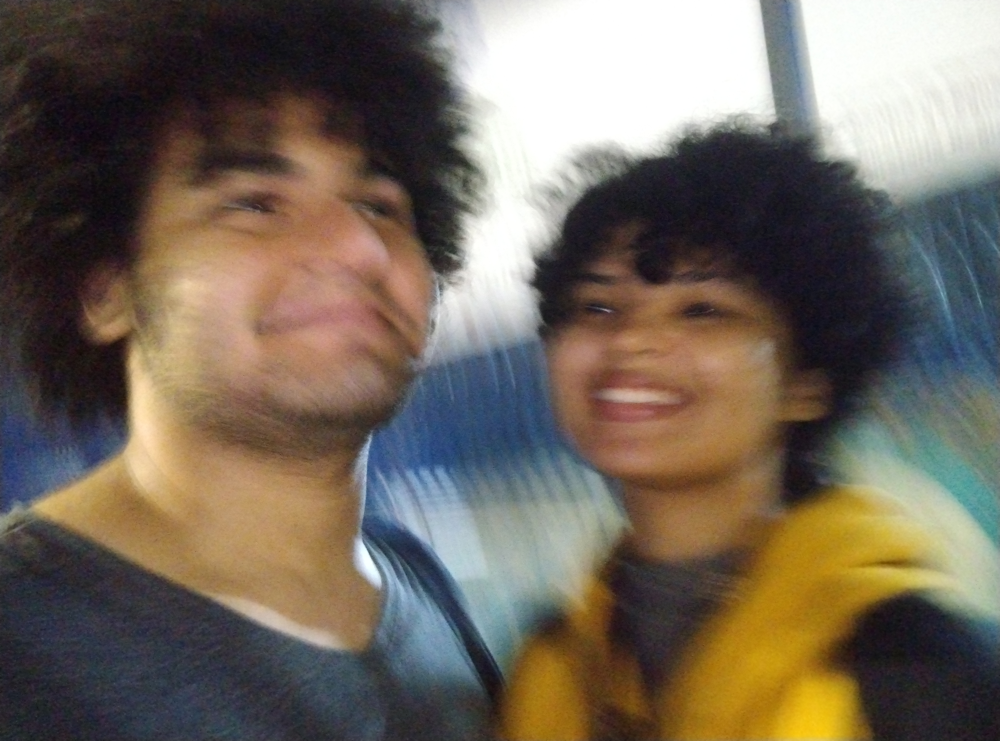
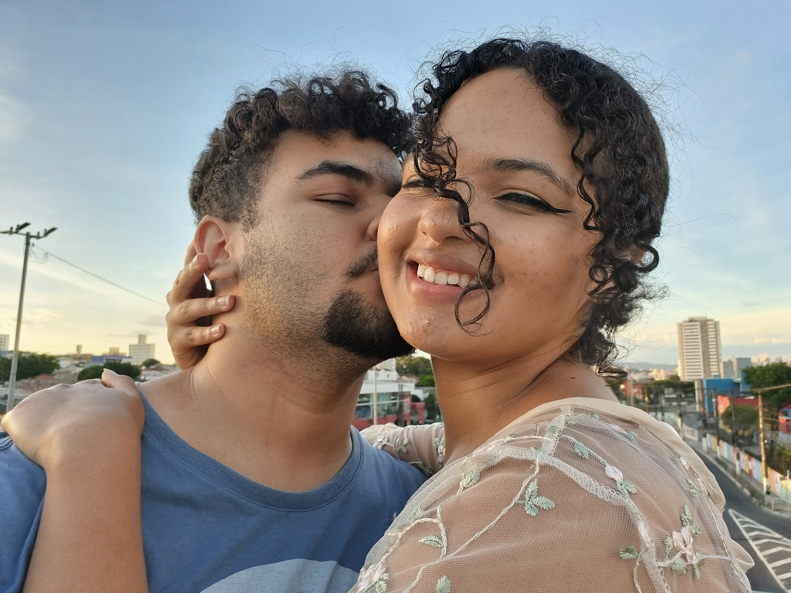
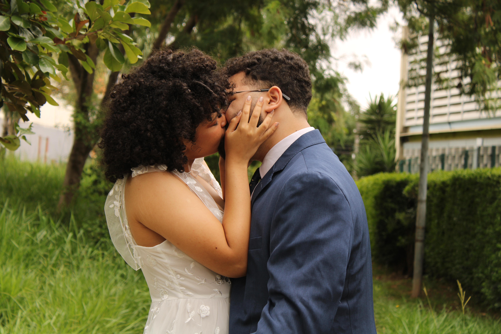
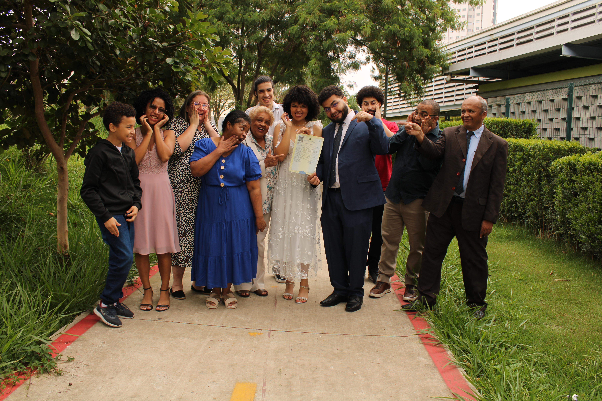

Lembro como se fosse ontem, quando começamos a trocar mensagens, rindo das piadas “sem graça” um do outro. Era leve, era livre — nas palavras, nos pensamentos, na forma de estar. Havia um senso de liberdade em simplesmente ser.
Com o tempo, nossos mundos foram se aproximando de tal forma que aprendemos a habitar os dois. Passamos a transitar entre os nossos gostos e jeitos, buscando o que fazia bem para um e para o outro. E o mais curioso era o jeito como resistíamos a sair das nossas zonas de conforto — aquele bico no início, aquela pequena teimosia — mas, no fim de cada experiência, sempre havia um sorriso e um beijo quente que nos aquecia até nos dias mais frios.
Nosso namoro... ah, que fase boa. Um eterno namoro. Construído com convicção. Reconhecemos o que incomodava, corrigimos erros, e aprendemos a acolher “erros” que, no fundo, só eram diferentes. Assim fomos crescendo, como dupla. Nos momentos difíceis, éramos apoio. Nos mais felizes, éramos asas, impulsionando um ao outro para voos ainda maiores.
É uma honra viver tudo isso contigo. E foi uma honra te ver de branco naquele cartório, selando nosso amor. Relembro aquela cena com carinho — o amor que conseguimos transmitir ali foi tão forte que aproximou até quem relutava em estar presente. No fim, as pessoas que mais importavam estavam ao nosso redor.
 Queria ter te dado uma festa, algo à altura do que sonhamos... mas sei que, talvez, no futuro, esse momento
ainda
chegará — e será inesquecível.
Hoje é uma data especial para o mundo. Mas, para mim, todos os dias são únicos, porque reviver o seu
sorriso, ver
o brilho dos seus olhos e sentir meu peito aquecido no seu abraço já torna tudo extraordinário.
Eu te amo.